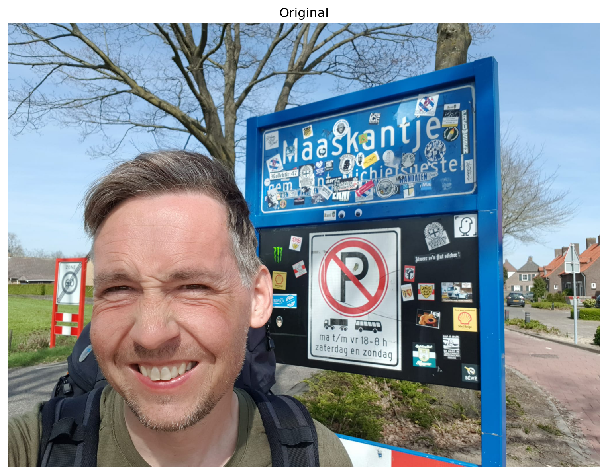
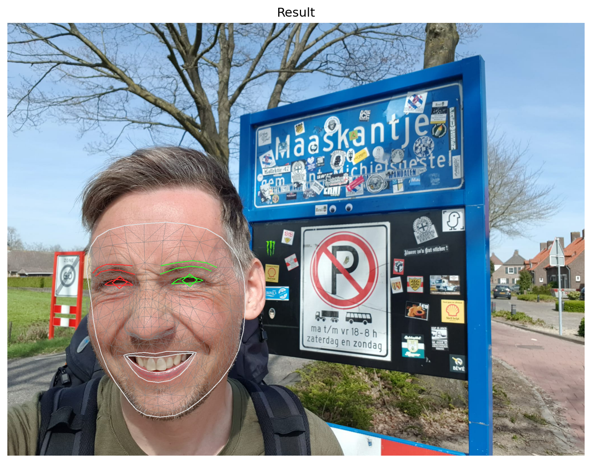

import cv2
import os
import glob
import itertools
import numpy as np
import pandas as pd
import mediapipe as mp
import matplotlib.pyplot as plt
from os import listdir
from os.path import isfile, joinEarlier this year, I embarked on the famous pilgrimage Camino de Santiago, walking from my hometown Leeuwarden in the north of the Netherlands all the way to Santiago de Compostela. For three months, I lived out of a backpack and primarily engaged in wild-camping along the trail. Throughout my journey, I visited some of the most awe-inspiring places, met incredible people along the way, and created unforgettable memories that I will cherish forever.
I didn’t want people to think I was just on a huge camping trip to get away from the daily grind, so I told them it was a pilgrimage of “spiritual growth” and “self-discovery”. Some just scoffed, others thought I was losing my mind. To convince my less-enlightened friends that this wasn’t just a three-month hike to nowhere, I took a selfie every day to document my, ehm, transcendence.
In this post I’ll show how I turned these daily selfies into a time-lapse video using MediaPipe and OpenCV.
Import libraries
We start by importing the necessary libraries. We use MediaPipe to detect face landmarks and OpenCV to scale and translate the images to align them with each other.
About MediaPipe
MediaPipe is a framework developed by Google that bundles several ML solutions to process images and video. The Face Mesh component estimates 468 3D face landmarks. Below I show how this component can be used.
We first load an image using the OpenCV 2 library and plot it using Matplotlib.
FILENAME = "selfie.jpg"
image = cv2.imread(FILENAME)
plt.figure(figsize=(10, 10))
plt.title("Original")
plt.axis('off')
plt.imshow(cv2.cvtColor(image, cv2.COLOR_BGR2RGB))
plt.show()
Then we find the landmarks and draw a mesh on the image.
mp_drawing = mp.solutions.drawing_utils
mp_drawing_styles = mp.solutions.drawing_styles
mp_face_mesh = mp.solutions.face_mesh
drawing_spec = mp_drawing.DrawingSpec(thickness=1, circle_radius=1)
with mp_face_mesh.FaceMesh(static_image_mode=True,
max_num_faces=1, refine_landmarks=True, min_detection_confidence=0.5) as face_mesh:
image = cv2.imread(FILENAME)
results = face_mesh.process(cv2.cvtColor(image, cv2.COLOR_BGR2RGB))
# draw face mesh landmarks on the image.
for face_landmarks in results.multi_face_landmarks:
mp_drawing.draw_landmarks(image=image, landmark_list=face_landmarks,
connections=mp_face_mesh.FACEMESH_TESSELATION, landmark_drawing_spec=None,
connection_drawing_spec=mp_drawing_styles.get_default_face_mesh_tesselation_style())
mp_drawing.draw_landmarks(image=image,
landmark_list=face_landmarks, connections=mp_face_mesh.FACEMESH_CONTOURS, landmark_drawing_spec=None,
connection_drawing_spec=mp_drawing_styles.get_default_face_mesh_contours_style())
mp_drawing.draw_landmarks(image=image, landmark_list=face_landmarks,
connections=mp_face_mesh.FACEMESH_IRISES, landmark_drawing_spec=None,
connection_drawing_spec=mp_drawing_styles.get_default_face_mesh_iris_connections_style())INFO: Created TensorFlow Lite XNNPACK delegate for CPU.And show the result.
plt.figure(figsize=(10,10))
plt.title("Result")
plt.axis('off')
plt.imshow(cv2.cvtColor(image, cv2.COLOR_BGR2RGB))
plt.show()
Selecting landmarks
We’re only interested in a few specific landmarks to figure out how to scale and translate images so that they can be stitched together into a time-lapse video. More specifically, we are interested in the landmarks corresponding to the nose and the left- and rightmost points of the face. The landmark that corresponds with the tip of the nose is used to align images. The left- and rightmost landmarks are used to determine how much to scale them.
The index numbers for the different landmarks can be found in this image.
{kind=link}
We define some constants including the indexes of the landmarks we’re interested in. You can experiment with the FPS parameter that tells you how many different frames will be shown per second.
IMG_PATH = "selfies/" # the input directory
OUTPUT_PATH = "output/" # also used for temporary files
VIDEO_NAME = 'video.avi' # the output filename
FPS = 3 # frames per second
NOSE_TIP_LANDMARK = 1
LEFTMOST_LANDMARK = 234
RIGHTMOST_LANDMARK = 454Clearing old files
To start, we’ll delete all files in OUTPUT_PATH that might still be there from previous runs.
files = glob.glob(os.path.join(OUTPUT_PATH, "*"))
for f in files:
os.remove(f)Defining helper functions
We need to define a couple of helper functions.
Mediapipe landmarks are defined as 3D coordinates. The following function converts a landmark into a 2D pixel coordinate.
def to_pixel_coord(image, landmark):
# convert landmark to pixel coordinates
[height, width, _] = image.shape
return int(landmark.x * width), int(landmark.y * height)Another function loops through all files in a directory and tries to determine the landmarks’ pixel coordinates. The result is returned as a Pandas dataframe.
def read_landmarks(path):
# find all files in directory
filenames = [f for f in listdir(path) if isfile(join(path, f))]
filenames.sort()
# create an empty dataframe
columns = {
"file": str(),
"nose_tip_x": int(), "nose_tip_y": int(),
"leftmost_x": int(), "leftmost_y": int(),
"rightmost_x": int(), "rightmost_y": int(),
"width": int(), "height": int()
}
df = pd.DataFrame(columns, index=[])
# find the landmarks' pixel coordinates
with mp_face_mesh.FaceMesh(static_image_mode=True,
max_num_faces=1, refine_landmarks=True,
min_detection_confidence=0.5) as face_mesh:
for file in filenames:
image = cv2.imread(os.path.join(path, file))
results = face_mesh.process(cv2.cvtColor(image, cv2.COLOR_BGR2RGB))
if not len(results.multi_face_landmarks) == 1:
# detected less or more than one face -> skip image
continue
face_landmarks = results.multi_face_landmarks[0]
nose_tip_x, nose_tip_y = to_pixel_coord(image, face_landmarks.landmark[NOSE_TIP_LANDMARK])
leftmost_x, leftmost_y = to_pixel_coord(image, face_landmarks.landmark[LEFTMOST_LANDMARK])
rightmost_x, rightmost_y = to_pixel_coord(image, face_landmarks.landmark[RIGHTMOST_LANDMARK])
[height, width, _] = image.shape
landmarks_xy = [file, nose_tip_x, nose_tip_y, leftmost_x, leftmost_y, rightmost_x, rightmost_y, width, height]
df = pd.concat([df, pd.DataFrame([landmarks_xy], columns=list(columns.keys()))], ignore_index=True)
return dfWe also need a function to scale images.
def scale_image(filename_input, filename_output, factor):
# read image from disk
image = cv2.imread(filename_input)
(height, width) = image.shape[:2]
res = cv2.resize(image, (int(width * factor), int(height * factor)), interpolation=cv2.INTER_CUBIC)
# write image back to disk.
cv2.imwrite(filename_output, res)The next function translates an image. Translating an image means shifting it within a given frame of reference.
def translate_image(filename_input, filename_output, x, y):
# if the shift is (x, y) then the translation matrix would be
# M = [1 0 x]
# [0 1 y]
M = np.float32([[1, 0, x], [0, 1, y]])
# read image from disk.
image = cv2.imread(filename_input)
(rows, cols) = image.shape[:2]
# warpAffine does appropriate shifting given the translation matrix.
res = cv2.warpAffine(image, M, (cols, rows))
# write image back to disk.
cv2.imwrite(filename_output, res)Processing the images
Now we can process our collection of selfies. This means finding landmarks, scaling, and translating images so that they align properly.
Finding landmarks
We can just call the function we define before.
df = read_landmarks(IMG_PATH)Scaling images
By rescaling the images we make the face in each photo of similar size.
We first determine the mean size of the face.
mean_face_size = int(df.rightmost_x.mean()) - int(df.leftmost_x.mean())After finding the mean face size, we rescale each image to match this.
for _, row in df.iterrows():
filename = row['file']
face_size = row['rightmost_x'] - row['leftmost_x']
scale_image(os.path.join(IMG_PATH, filename), os.path.join(OUTPUT_PATH, filename), mean_face_size / face_size)After rescaling, we need to find the landmarks again as they have changed.
df = read_landmarks(OUTPUT_PATH)Translating images
In this step we find the average location of the tip of the nose. Then we translate all images so that the tips of the noses align. We keep track of how much an image is maximally shifted in the horizontal or vertical direction so we can properly crop the images later.
mean_x = int(df.nose_tip_x.mean())
mean_y = int(df.nose_tip_y.mean())crop_left = 0
crop_right = 0
crop_top = 0
crop_bottom = 0for _, row in df.iterrows():
filename = row['file']
shift_x = mean_x - row['nose_tip_x']
shift_y = mean_y - row['nose_tip_y']
translate_image(os.path.join(OUTPUT_PATH, filename), os.path.join(OUTPUT_PATH, filename), shift_x, shift_y)
if shift_x > 0 and shift_x > crop_left:
crop_left = shift_x
elif shift_x < 0 and abs(shift_x) > crop_right:
crop_right = abs(shift_x)
elif shift_y > 0 and shift_y > crop_top:
crop_top = shift_y
elif shift_y < 0 and abs(shift_y) > crop_bottom:
crop_bottom = abs(shift_y)Cropping images
Because of translating we ended up with images with black bars on the sides. We crop images so that these disappear. This way we end up with images that are a bit smaller.
min_width = df.width.min()
min_height = df.height.min()
for _, row in df.iterrows():
filename = row['file']
image = cv2.imread(os.path.join(OUTPUT_PATH, filename))
(rows, cols) = image.shape[:2]
res = image[crop_top:min_height, crop_left:min_width]
cv2.imwrite(os.path.join(OUTPUT_PATH, filename), res)Creating the final video
We can now concatenate all images into a video and delete any temporary files.
images = [img for img in os.listdir(OUTPUT_PATH)]
images.sort()
frame = cv2.imread(os.path.join(OUTPUT_PATH, images[0]))
height, width, layers = frame.shape
video = cv2.VideoWriter(os.path.join(OUTPUT_PATH, VIDEO_NAME), 0, FPS, (width, height))
for image in images:
video.write(cv2.imread(os.path.join(OUTPUT_PATH, image)))
cv2.destroyAllWindows()
video.release()
for image in images:
os.remove(os.path.join(OUTPUT_PATH, image))The final result looks like this:
Let me know in the comments what you think. Isn’t this time-lapse of my baby face turned Neanderthal clear evidence of my “spiritual ascension”?
Creating your own time-lapse
If you want to create your own time-lapse video, check out one of the following links: